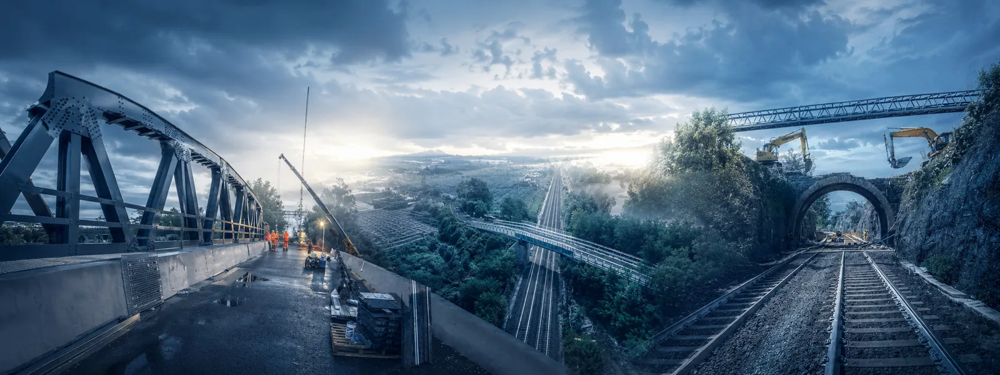
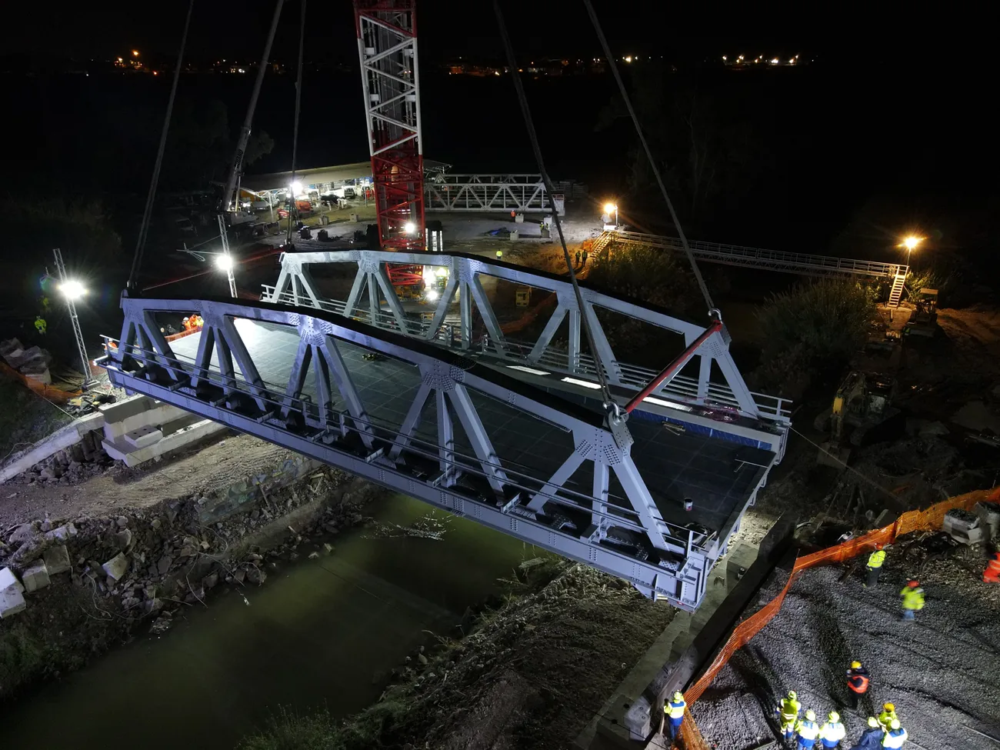

Ponti e opere d’arte
Progettazione · Verifica · Riqualificazione · Sicurezza strutturale
CIVIL ENGINEERING · RAILWAY INFRASTRUCTURE
Sustainability challenges in a constantly evolving framework
Giorgio Micolitti

01 · PROFILO PROFESSIONALE
Ingegnere Civile Geotecnico, Dirigente e Project & Construction Manager, con oltre 24 anni di esperienza nella progettazione, realizzazione e gestione di grandi infrastrutture ferroviarie.
Il percorso si è sviluppato interamente nel Gruppo FS Italiane, con responsabilità crescenti: dalla Direzione Investimenti alla Direzione Tecnica di RFI, alla pianificazione strategica di FS, fino alla guida dell’ingegneria Civile territoriale della Direzione Operativa di Roma di RFI.
Oggi Dirigente Responsabile dell’Ingegneria dei Collegamenti Ferroviari di Stretto di Messina S.p.A., dove coordina le attività multidisciplinari di uno dei programmi infrastrutturali più complessi in Italia.
Un percorso che unisce ingegneria, project management e leadership, con competenza specifica in infrastrutture ferroviarie, gallerie, grandi opere, gestione del rischio e coordinamento di team e stakeholder complessi.
Ci sono risultati che tutti possono vedere. E poi c’è il lavoro quotidiano che li rende possibili.Percorso professionale →
02 · AMBITI E COMPETENZE INFRASTRUTTURALI
Ambiti infrastrutturali
Progettazione · Verifica · Riqualificazione · Sicurezza strutturale
Progettazione · Sicurezza dell’esercizio · Aerodinamica · Fire engineering
Opere civili · Accessibilità · Impianti · Integrazione con l’esercizio
Piani regolatori · Raccordi · Potenziamenti · Adeguamenti
Armamento · Stazioni · Impianti speciali · Interoperabilità
Reti TEN-T · Interoperabilità · Collegamenti ferroviari · Opere transfrontaliere
Competenze trasversali
Progettazione · Pianificazione · Tempi, costi e qualità · Realizzazione
Sicurezza in galleria · Risk management · Rischio sismico e idrogeologico
Collaudi statici · Collaudi tecnico-amministrativi · Verifiche progettuali
Capital budgeting · Valutazioni tecnico-economiche · Pianificazione industriale
TSI · Standard tecnici · Organismi e gruppi di lavoro europei
Team progettisti · Imprese · Enti e stakeholder
Rischio sismico · Dissesto idrogeologico · Manutenzione · Riqualificazione
03 · 25 ANNI DI RFI
Nel venticinquesimo anniversario di RFI, questo video è dedicato alle persone che, con competenza, cura e responsabilità, contribuiscono ogni giorno allo sviluppo e al funzionamento della rete ferroviaria italiana.
04 · PERCORSO IN RFI
Dalla pianificazione infrastrutturale e dagli standard tecnici e normativi, alla strategia e valutazione degli investimenti, fino alla gestione operativa, manutenzione e realizzazione delle opere.
Dal 2002 il percorso in RFI e nel Gruppo FS ha attraversato Direzione Investimenti, Direzione Tecnica, Direzione Centrale Strategie e Pianificazione e Direzione Operativa Territoriale di Roma, fino all’attuale responsabilità in Stretto di Messina S.p.A.
Ingegnere Civile, Dirigente e Project & Construction Manager, con oltre 24 anni di esperienza nella progettazione, realizzazione e gestione di grandi infrastrutture ferroviarie.
Il percorso si è sviluppato interamente nel Gruppo FS Italiane: dalla Direzione Investimenti e dalla Direzione Tecnica di RFI, alla Direzione Centrale Strategie e Pianificazione di Ferrovie dello Stato Italiane, fino a oltre dieci anni di incarichi a responsabilità crescente nella Direzione Operativa Territoriale di Roma di RFI. Attualmente è Responsabile dell’Ingegneria dei Collegamenti Ferroviari di Stretto di Messina S.p.A., dove coordina le attività multidisciplinari per l’integrazione delle opere ferroviarie del Ponte sullo Stretto nella rete nazionale.
L’esperienza tecnica è focalizzata su gallerie, ponti, stazioni, armamento e opere complesse in ambiente sotterraneo, con competenze specifiche in aerodinamica dei treni ad Alta Velocità in galleria, analisi del rischio per la sicurezza dell’esercizio e fire engineering. A queste si affiancano impianti tecnologici speciali, sicurezza dei cantieri e HSE, sostenibilità e mitigazione dei rischi sismici e acustici.
A livello internazionale ha partecipato a gruppi di lavoro presso le principali istituzioni ferroviarie europee (UIC, AEIF, CER, EU-FIT) e ha collaborato con società partecipate da RFI impegnate nelle grandi gallerie transfrontaliere, tra cui Brenner Basis Tunnel e Torino–Lione. Le competenze manageriali, consolidate anche attraverso un Executive Master in General Management, si integrano con una conoscenza diretta dell’intero processo realizzativo — dalla progettazione alla messa in esercizio — e con il coordinamento di team multidisciplinari fino a circa 100 risorse in cinque unità.
Docente di Tecnica dei Cantieri Infrastrutturali presso il Master di II livello in Ingegneria delle Infrastrutture e dei Sistemi Ferroviari della Sapienza Università di Roma (2020, 2021, 2022). Pilota UAV certificato EASA A1/A2/A3.

05 · ESPERIENZE IN NUMERI
06 · PROJECT DIARY
07 · VIDEO & INSIGHTS
Sequenza di varo trasversale di un ponte ferroviario di 30 m a travata reticolare.
Il varo di un cavalcavia in acciaio a travi estradossate di 40 m.
Dal ponte ad arco in muratura al sottovia scatolare in cls.
Esempio di varo trasversale di ponte in acciaio.
Varo di un nuovo ponte a travi in acciaio incorporate.
Realizzazione e varo del ponte in acciaio Zambra · 2021.
Rimozione di ponte pedonale in cls.
Esempio di rimozione di ponte imbarco in acciaio.
La rimozione di un ponte ferroviario.
Realizzazione e rimozione passerella pedonale provvisoria in acciaio · 2021.
Esempio di ponte ad arco reticolare in acciaio a tre cerniere.
08 · AGOSTO 2022
Uno dei lavori estivi eseguiti dalla squadra di Ingegneria Civile della DOIT Roma, in finestre operative complesse e programmate nei mesi di minore traffico.
09 · PONTE SULLO STRETTO
Dal novembre 2023 Giorgio Micolitti è Responsabile Ingegneria Collegamenti Ferroviari di Stretto di Messina S.p.A. e guida la relativa Struttura Organizzativa.
La sezione mantiene volutamente separati ruolo professionale e documentazione fotografica: vengono utilizzate soltanto immagini con attribuzione certa.
10 · DOCENZE
Docente di Tecnica dei Cantieri Infrastrutturali presso il Master Sapienza in Ingegneria delle Infrastrutture e dei Sistemi Ferroviari (IIS), edizioni 2020, 2021 e 2022.
11 · FORMAZIONE
Pianificazione Strategica e Organizzazione Aziendale, Amministrazione e Controllo di Gestione, Finanza, Strategie e Politiche di Marketing, Gestione delle Operations, Gestione HR.
Iscritto all’Albo degli Ingegneri di Roma, n. 31957.
Premio di Laurea del Ministro delle Infrastrutture P. Lunardi.
12 · PUBBLICAZIONI SELEZIONATE
Premio conferito al World Tunnel Congress 2001 dal Ministro delle Infrastrutture Pietro Lunardi, per l’ampio contributo culturale alla scienza della meccanica delle rocce e dei terreni.
In concomitanza con il Convegno Internazionale ITA-AITES 2001, organizzato dalla Società Italiana Gallerie e dalla Swiss Tunnelling Society con la partecipazione dell’ITA (International Tunnelling Association) — Milano, Centro Congressi Milanofiori, 10–13 giugno 2001, circa 1000 partecipanti — la SIG e il Ministro Lunardi hanno conferito, tra 43 partecipanti, il Quarto Premio di Laurea 2001 “Costruzioni in sotterraneo”, aperto a tutte le discipline attinenti, alla tesi del Dott. Ing. Giorgio Micolitti “Analisi di stabilità di scavi con metodi ad elementi distinti”, discussa presso l’Università degli Studi di Roma “La Sapienza”, Facoltà di Ingegneria, relatore Prof. Renato Ribacchi, con la seguente motivazione:
«L’Autore si è posto l’obbiettivo di analizzare lo stato tensionale e deformativo indotto dalla realizzazione di cavità sotterranee in ammassi rocciosi fratturati, con particolare riferimento alla stabilità di quelli di tipo stratificato, sviluppando la modellazione di sistemi a comportamento marcatamente discontinuo caratterizzato da blocchi interagenti lungo le discontinuità che vedono il continuo come un caso particolare. La tesi utilizza codici di calcolo complessi e che prevedono diverse modellazioni per cui il campo di applicazione risulta ampiamente esplorato anche con alcuni confronti significativi. Ne consegue un importante contributo culturale per la Scienza della Meccanica delle rocce e dei terreni anche per l’ampia biografia citata.»
Conferito per la pubblicazione sulla sicurezza di esercizio in condizioni di emergenza — «La Tecnica Professionale», settembre 2003.
Conferito per la pubblicazione su «Fenomeni aerodinamici indotti dai treni AV in galleria» — «Ingegneria Ferroviaria», ottobre 2006.
Conferito per la pubblicazione su «La normativa europea per la sicurezza delle gallerie» — «La Tecnica Professionale», marzo 2009.